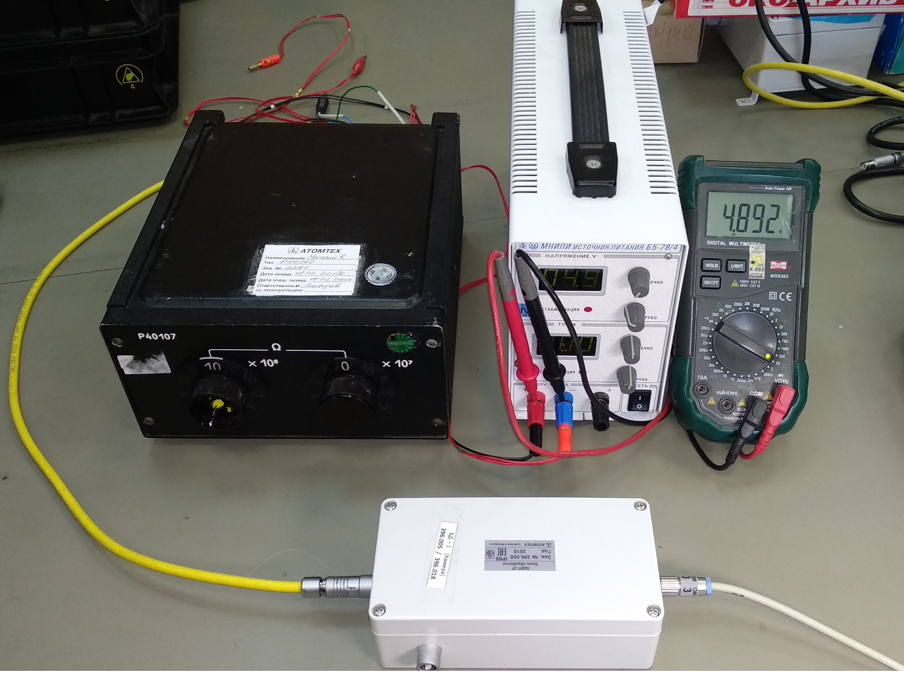
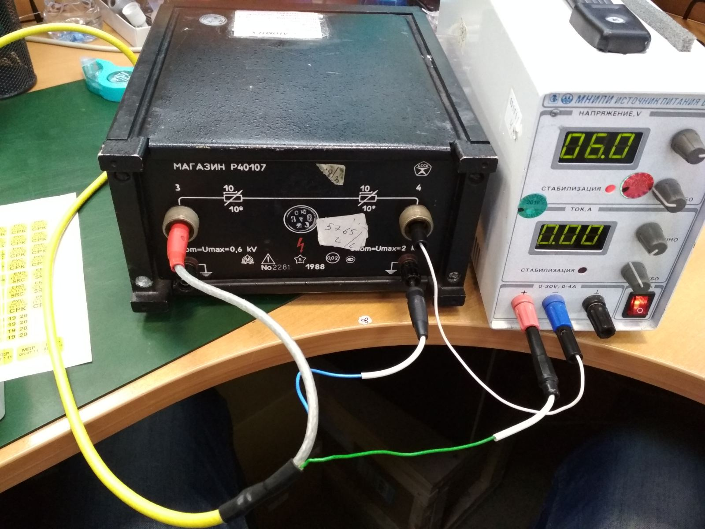
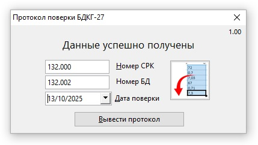

БДКГ-27. Как рассчитать протокол поверки
- Собрать по схеме
- Вот так это будет выглядеть: 
- Со стороны проводов: 
- ПОКАЗАНИЯ БРАТЬ НЕ С БУ, А С МУЛЬТИМЕТРА, ТОЧНЕЕ БУДЕТ
- Подключиться к блоку обмена БДКГ-27 с помощью SARKtech
- Выставить на магазине сопротивлений 109 Ом:
- На блоке питания выставить такое напряжение, при котором показания мощности дозы (в SARKtech) будут равны 7 Зв/ч (примерно 4В). Для расчета значений напряжений вписать полученное напряжение в поле ввода и нажать "Рассчитать"
- Дальше идет расчет трёх точек
Раньше снимались показания с 4-х точек, теперь только с 3-х
Точка 1
- Выставить сопротивление 108
- Выставить на блоке питание следующее напряжение:
- Снять показания мощности дозы 3 раза (SARKtech), каждый раз нажимая "Сброс". Записать данные в таблицу:
Перед 2-й точкой выставить коэффициент 2-ого диапазона равный коэффициенту первого диапазона умноженному на 10.
При переходе во-2ой диапазон (точка перехода равна 500 Зв/ч) обратить внимание на скорость счёта (она должна
упасть примерно в 10 раз)!
Точка 2
- Выставить сопротивление 107
- Выставить на блоке питание следующее напряжение:
- Подкорректировать показания коэффициентом второго диапазона (+/-10%).
- Снять показания мощности дозы 3 раза (SARKtech), каждый раз нажимая "Сброс". Записать данные в таблицу
Точка 3
- Выставить сопротивление 107
- Выставить на блоке питание следующее напряжение:
- Снять показания мощности дозы 3 раза (SARKtech), каждый раз нажимая "Сброс"
- Записать данные в таблицу^
- Открыть журнал градуировок БДКГ-27, данные ввести в следующую форму:
- Все данные по точкам получены, нажать . При расчете данные заодно копируются в буфер обмена. Для вывода протокола поверки проще всего воспользоваться макросом. Открываем OpenOffice, запускаем макрос и вставляем данные из буфера обмена. Нет ничего проще!
| H0 | R | U | H | % |
|---|---|---|---|---|
| 70 | 108 | |||
| 700 | 107 | |||
| 3000 | 107 |
| Hпр | Hпр-Hф | отн | дов |
|---|---|---|---|
| 0 | 0 | 0 | 0 |
| 0 | 0 | 0 | 0 |
| 0 | 0 | 0 | 0 |
- В протоколе номером является номер ионизационной камеры, на неё же клеится поверочная наклейка!!!
В макросе необязательно нажимать кнопку "вставить", при открытии макрос автоматом
забирает данные из буфера и, если данные корректные, выводит соответствующее сообщение, кнопка "Вывести протокол" при этом становится активной
